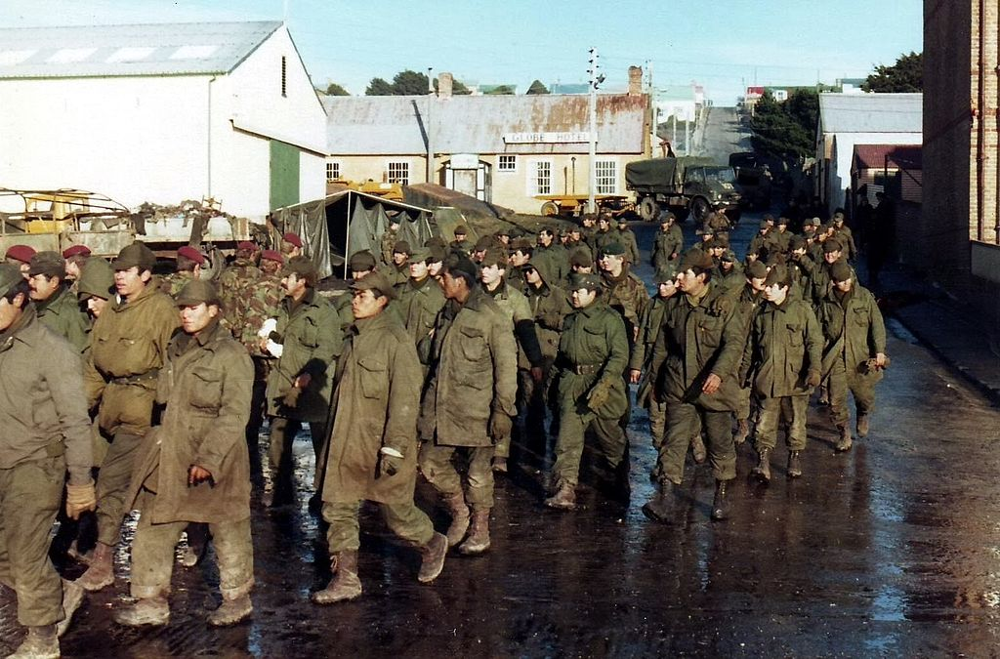
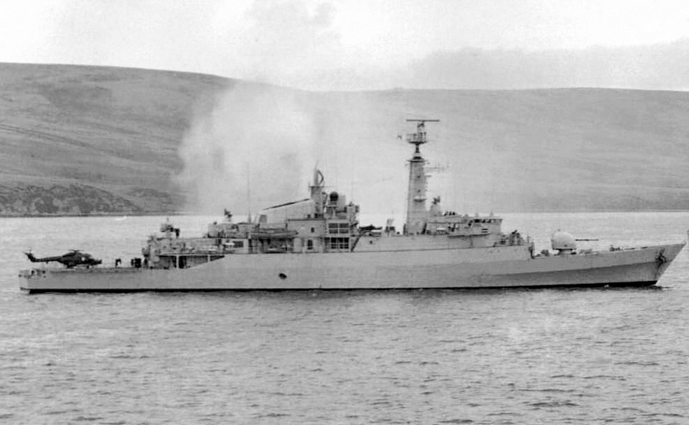
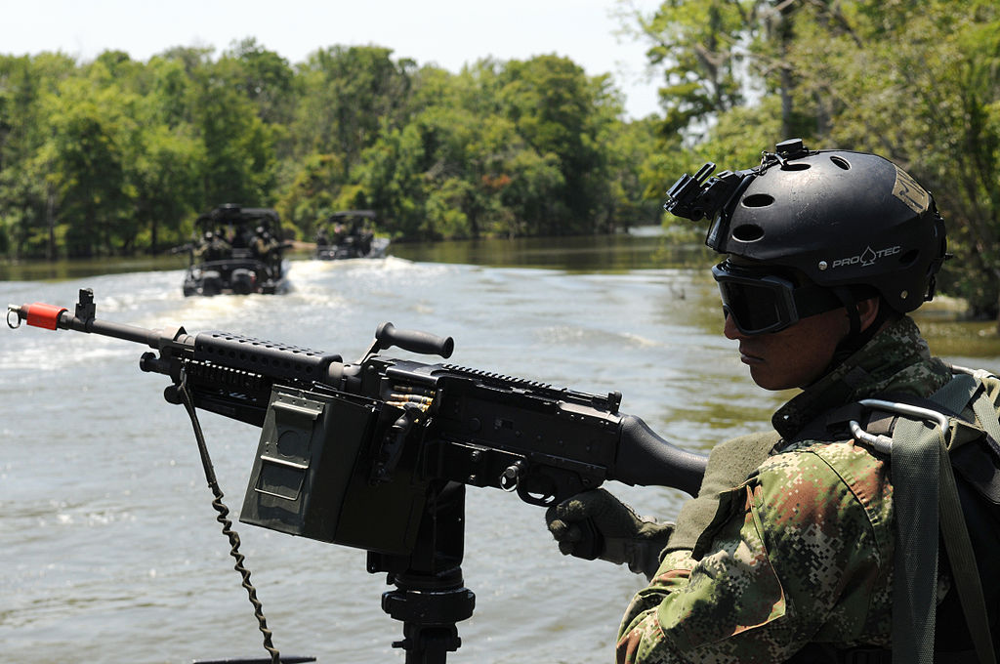
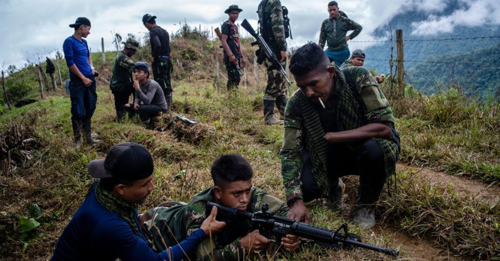
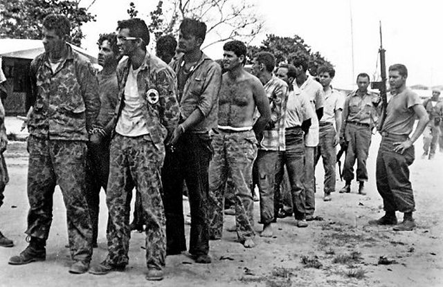
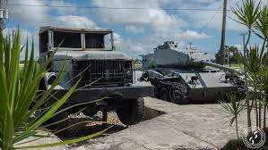

Inwazja w Zatoce Świń
Czas: 17–19 kwietnia 1961
Miejsce: Zatoka Świń, Kuba

Strony:
- Kuba
- Stany Zjednoczone, antykomunistyczni Kubańczycy z USA
Siły:
- Kuba - 20 000
- Stany Zjednoczone, antykomunistyczni Kubańczycy z USA - 1 400 kubańskich emigrantów, 2 agentów CIA
Wynik: zwycięstwo Kuby
Straty:
- Kuba - 5 176
- Stany Zjednoczone, antykomunistyczni Kubańczycy z USA - 114 zabitych, 1 189 osób dostało się do niewoli

Wojna o Falklandy-Malwiny
Czas: 2 kwietnia – 14 czerwca 1982
Miejsce: Falklandy, Georgia Południowa i Sandwich Południowy

Strony:
- Wielka Brytania
- Argentyna
Siły:
- Wielka Brytania - 30 000
- Argentyna - 20 000
Wynik:
- zwycięstwo Wielkiej Brytanii
- status quo ante bellum w Georgii Południowej i Falklandach
- załamanie się argentyńskiej junty wojskowej
Straty:
- Wielka Brytania - 258
- Argentyna - 649

Wojna domowa w Kolumbii
Czas: 27 maja 1964 – 26 września 2016 (wciąż trwają sporadyczne walki)
Miejsce: Kolumbia

Strony:
- Kolumbia Rząd Kolumbii, Zjednoczone Siły Samoobrony Kolumbii
- Rewolucyjne Siły Zbrojne Kolumbii, Armia Wyzwolenia Narodowego, Ludowa Armia Wyzwolenia
Siły:
- Kolumbia Rząd Kolumbii, Zjednoczone Siły Samoobrony Kolumbii - 90 000
- Rewolucyjne Siły Zbrojne Kolumbii, Armia Wyzwolenia Narodowego, Ludowa Armia Wyzwolenia - 100 000
Wynik: układ pokojowy w Hawanie
Straty:
- Kolumbia Rząd Kolumbii, Zjednoczone Siły Samoobrony Kolumbii - 50 000
- Rewolucyjne Siły Zbrojne Kolumbii, Armia Wyzwolenia Narodowego, Ludowa Armia Wyzwolenia - 60 000
